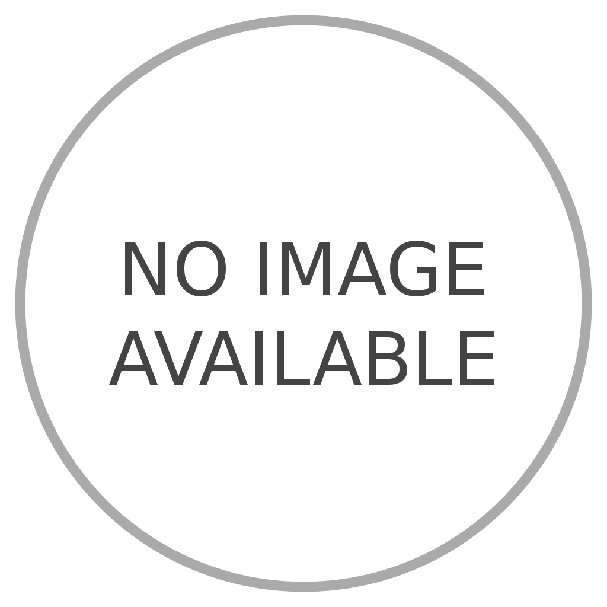
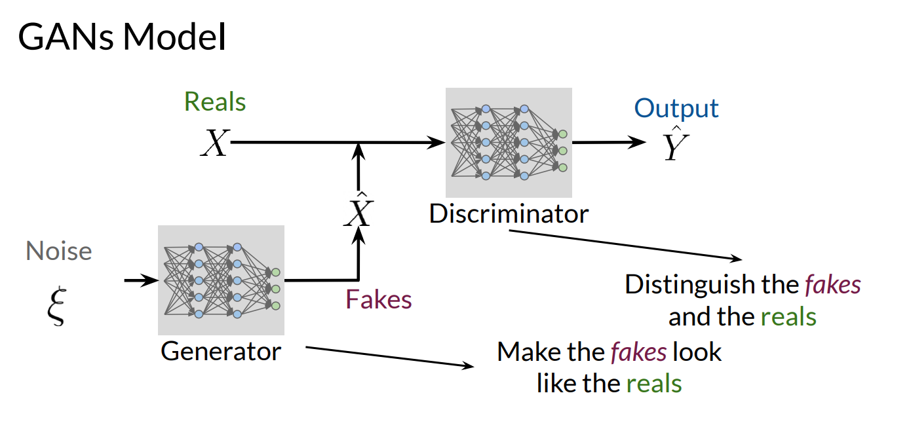
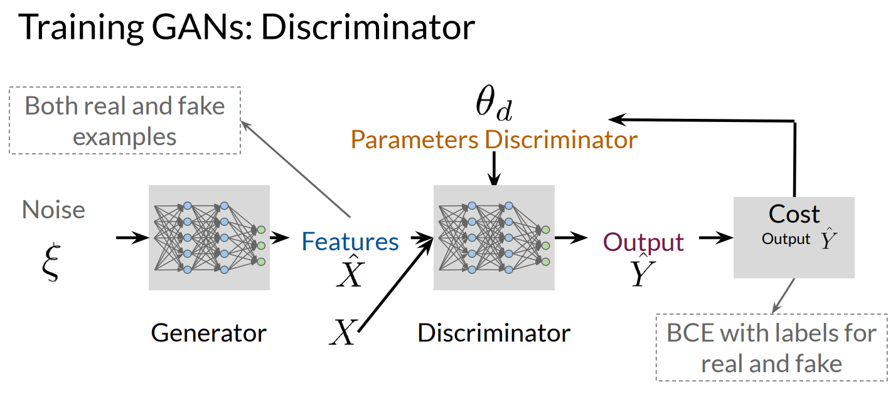
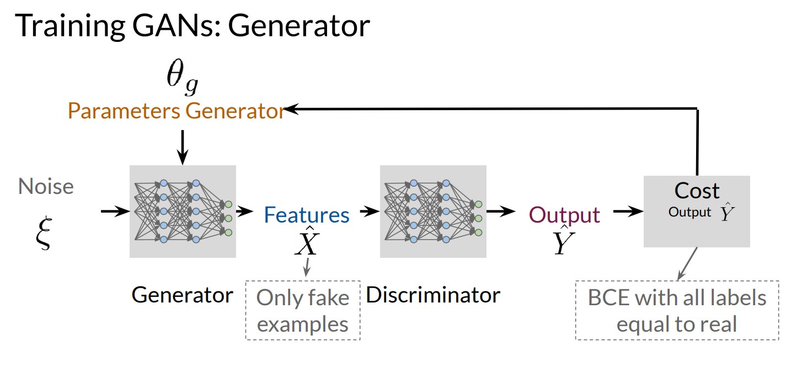
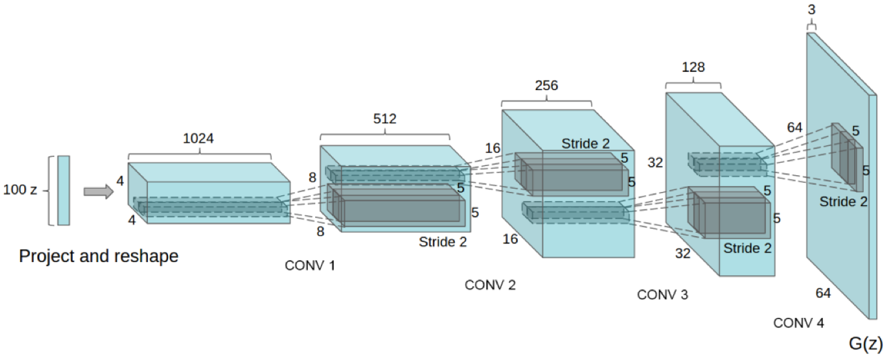
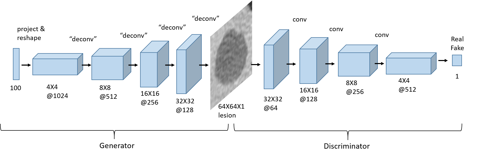

*Note : Below simulation according to the Figure 2 given below and components that will be involved in the cycle will be highlighted with respective color (Green - Generator , Red - Discriminator).

Latent Vector
Generator
Real
Fake
Discriminator
Model Loss
BCE Loss
Traning Cycle : None
Plot : Loss (Generator and Discriminator) V/S Epochs
Simulation : The simulation of the process is according to the figure 2 given below refer to figure if any confusion.
*Note : Discriminator uses both fake and real images to train whereas generator generate the image as pass it to discriminator for feedback.
DCGAN: Deep Convolutional Generative Adversarial Network
DCGAN, which stands for Deep Convolutional Generative Adversarial
Network, is a type of generative model used in the field of machine
learning and computer vision. It combines the power of convolutional
neural networks (CNNs) with the adversarial training framework of GANs
(Generative Adversarial Networks) to generaterealistic and
high-quality synthetic images.
What is GAN ?
A Generative Adversarial Network (GAN) is a deep learning model
consisting of two neural networks: the generator and the
discriminator. GANs are designed to generate new data that
resembles a given training dataset. They are widely used for tasks
such as image synthesis, text generation, and video generation.
The generator network takes random noise as input and generates
new samples. It tries to create realistic data that can fool the
discriminator. On the other hand, the discriminator network learns
to distinguish between real samples from the training data and
fake samples generated by the generator. The goal of GAN training
is to find an equilibrium where the generator generates realistic
samples that the discriminator cannot differentiate from real
samples.
GANs have been successfully applied in various domains, including
computer vision, natural language processing, and audio synthesis.
They have produced impressive results in generating realistic
images, generating human-like text, and creating deepfake videos.
However, training GANs can be challenging as it involves finding a
delicate balance between the generator and the discriminator.
Instability during training, mode collapse, and other challenges
are common in GAN training. Researchers continue to explore
techniques and variations to improve the stability and performance
of GAN models.
The Generative Adversarial Network (GAN) architecture is composed
of two key components: the generator and the discriminator. These
components work together in a competitive process, enabling the
GAN to generate new data samples that resemble the training data.

Figure 1: GAN Architecture
The generator network takes random noise as input and transforms
it into synthetic data samples. Its objective is to generate data
that is realistic enough to deceive the discriminator. On the
other hand, the discriminator network acts as a classifier that
aims to distinguish between real data samples from the training
set and fake data samples generated by the generator. It is
trained on a combination of real and generated data. The training
process of GANs involves an adversarial game between the generator
and the discriminator. As the generator improves its ability to
generate realistic samples, the discriminator simultaneously
becomes more skilled at distinguishing real from fake samples.
This competitive process drives both networks to improve their
performance over time.


Figure 2 : GAN Training Cycles
GANs have demonstrated remarkable success in generating
high-quality synthetic data, including images, text, and audio.
They have been applied in various domains, such as image
synthesis, text generation, style transfer, and data augmentation.
It is worth noting that training GANs can be challenging, and
careful hyperparameter tuning and architectural considerations are
often necessary for stable and effective training.
The DCGAN architecture
The DCGAN architecture consists of two main components: the
generator and the discriminator. The generator takes random noise
as input and generates synthetic images. The discriminator, on the
other hand, tries to distinguish between the real images and the
fake images generated by the generator. Here's how the generator
and discriminator are trained in the DCGAN:
Generator:
The generator takes random noise as input and generates fake
images. These fake images are then fed into the discriminator.
The generator aims to generate images that can fool the
discriminator into classifying them as real.

Figure 3: DCGAN Generator Architecture
Discriminator:
The discriminator receives both real and fake images as input.
It learns to classify the real images as real and the fake
images as fake. The discriminator's objective is to correctly
classify the images and improve its discrimination ability.
Training Process
The training process involves an adversarial game between the
generator and discriminator. The generator tries to improve its
image generation to fool the discriminator, while the
discriminator tries to improve its discrimination ability to
correctly classify the real and fake images. DCGAN has achieved
remarkable success in generating high-quality synthetic images
across various domains, including natural images, faces, and
artworks. It has been used in applications such as image
synthesis, image editing, and data augmentation. By training the
DCGAN architecture with a large dataset, adjusting
hyperparameters, and optimizing the training process, it is
possible to generate highly realistic and visually appealing
synthetic images. The training process of DCGAN (Deep
Convolutional Generative Adversarial Network) involves iteratively
updating the weights of the generator and discriminator networks
through backpropagation and optimization algorithms. Here's a
plain text explanation of the training process:
Initialization: Initialize the weights of the
generator and discriminator networks randomly or using
pre-trained weights if available.
Data Preparation: Prepare a dataset of real
samples, typically images, that will serve as the training data.
Preprocess the data, such as resizing and normalizing the
images, to ensure consistency.
Adversarial Training: Alternating between
training the generator and discriminator networks. a. Generator
Training: - Generate fake samples: Input random noise vectors
into the generator network to generate fake samples. -
Discriminator feedback: Feed the generated fake samples along
with real samples into the discriminator network. - Calculate
generator loss: Compute the loss based on the discriminator's
feedback to determine how well the generator is performing. -
Backpropagation and optimization: Update the generator's weights
using backpropagation and an optimization algorithm, such as
Stochastic Gradient Descent (SGD) or Adam, to minimize the
generator loss. b. Discriminator Training: - Discriminator
feedback on real samples: Input real samples from the dataset
into the discriminator network and obtain its classification
results. - Discriminator feedback on fake samples: Input the
generated fake samples from the generator into the discriminator
and obtain its classification results. - Calculate discriminator
loss: Compute the loss for the discriminator based on its
ability to distinguish between real and fake samples. -
Backpropagation and optimization: Update the discriminator's
weights using backpropagation and an optimization algorithm to
minimize the discriminator loss.
Repeat Steps 3a and 3b: Iterate the adversarial
training process, alternating between updating the generator and
discriminator networks, for a specific number of epochs or until
convergence is reached.
Evaluation: Assess the quality of the generated
samples by visual inspection, quantitative metrics, or other
evaluation methods. Adjust hyperparameters or experiment with
architectural changes if necessary.
Generation of Synthetic Samples: Once the DCGAN
is trained, you can use the generator network to generate new
synthetic samples by inputting random noise vectors into the
generator.

Figure 4 : DCGAN Generator Architecture
By repeating the adversarial training process, the generator and
discriminator networks learn to improve their performance, with
the generator generating more realistic samples and the
discriminator becoming better at distinguishing between real and
fake samples. The goal is to reach an equilibrium where the
generator produces samples that are indistinguishable from real
data.